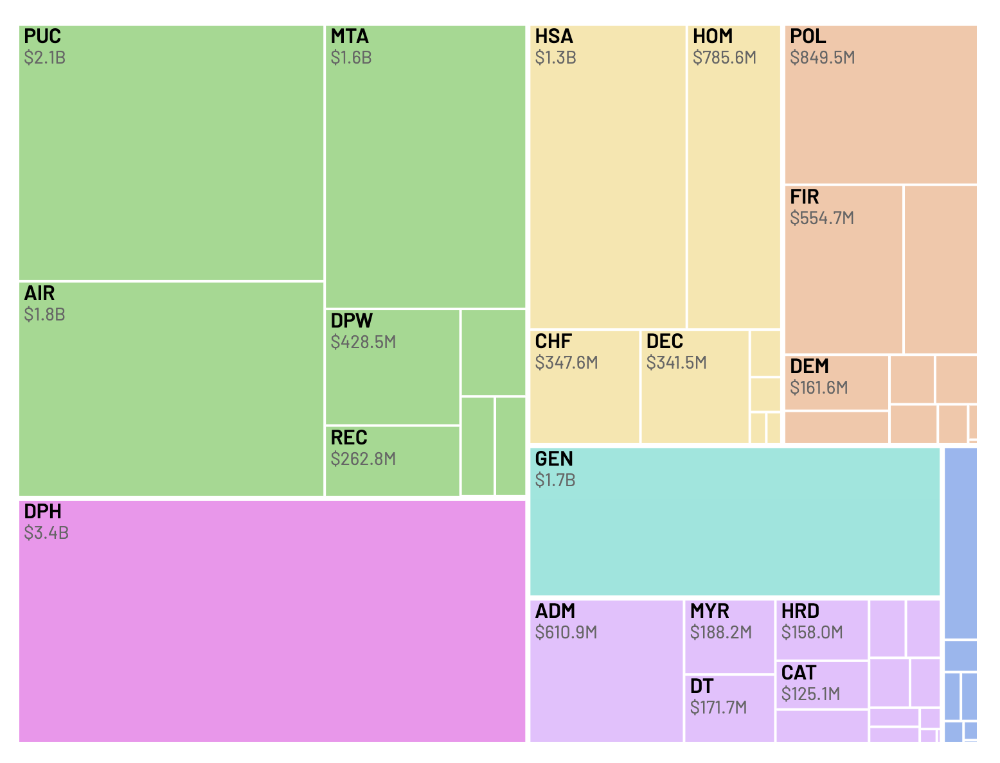
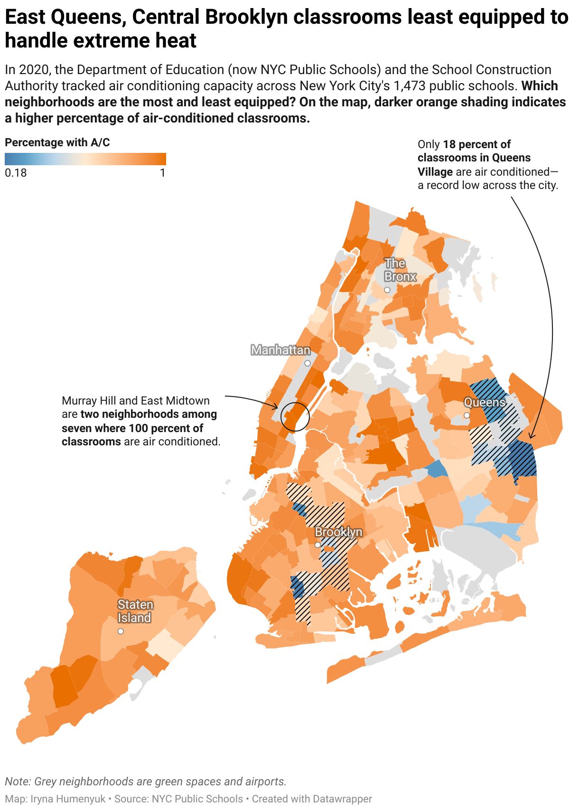
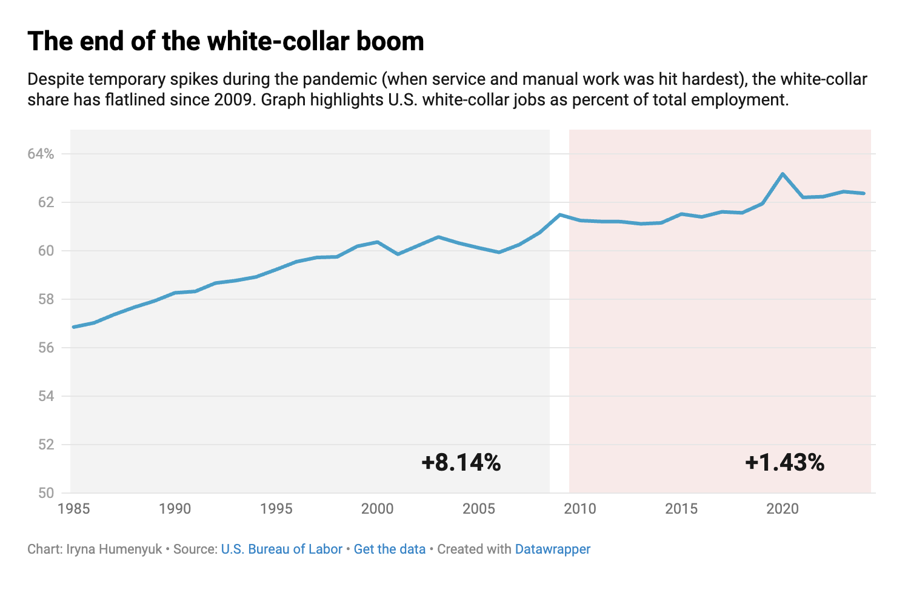
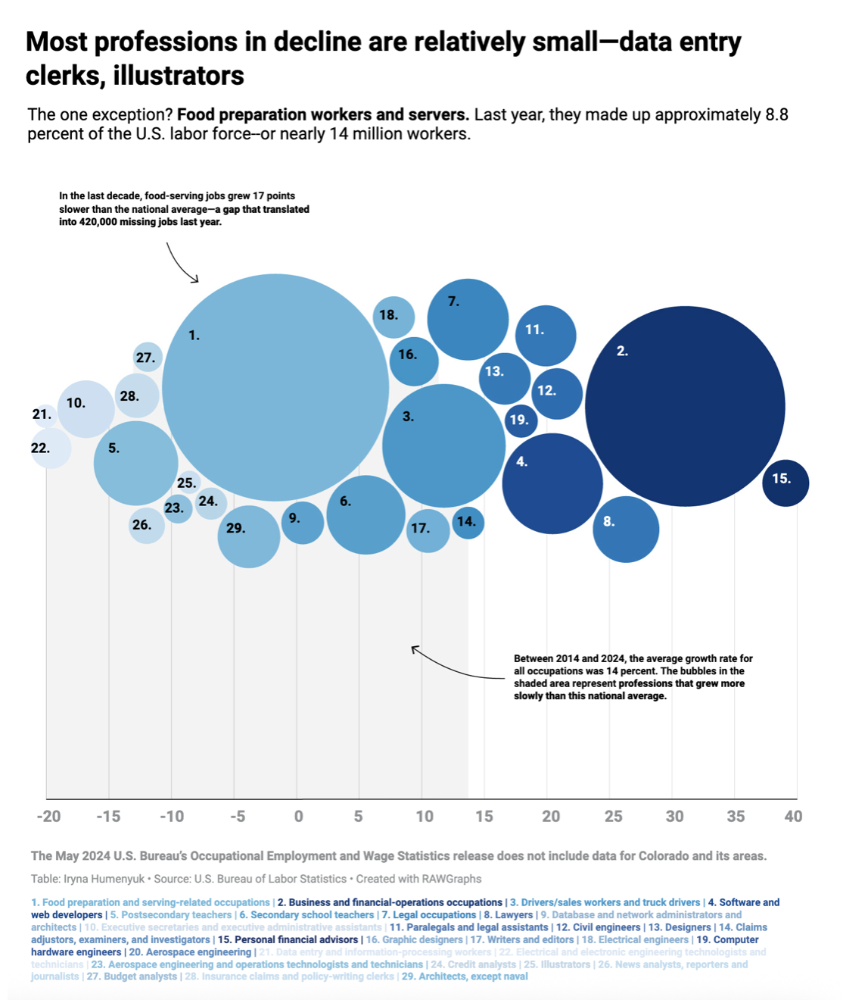
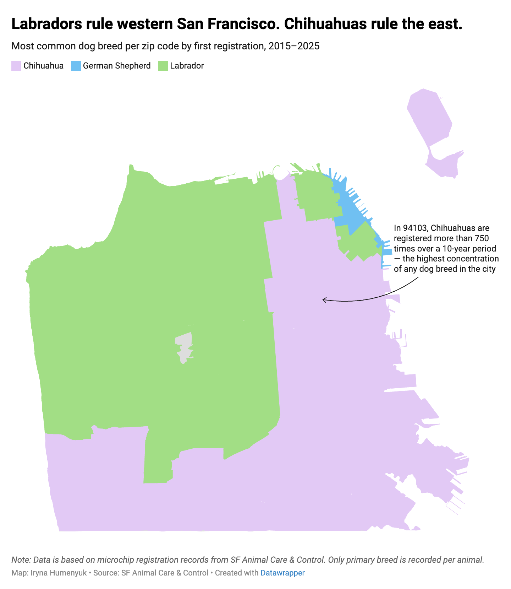
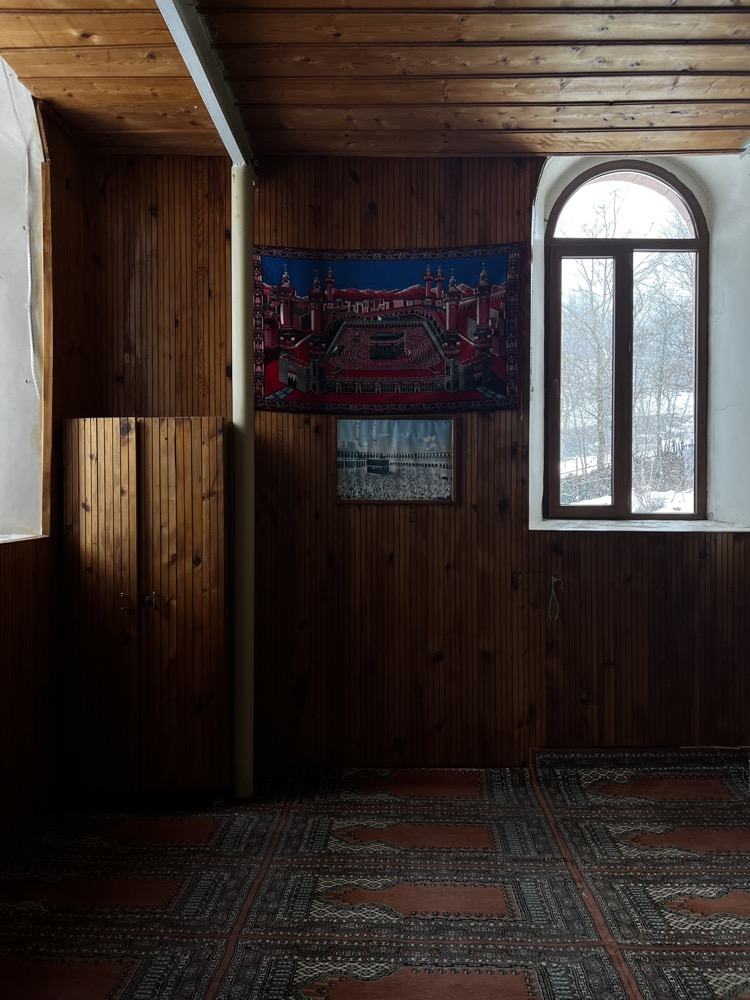
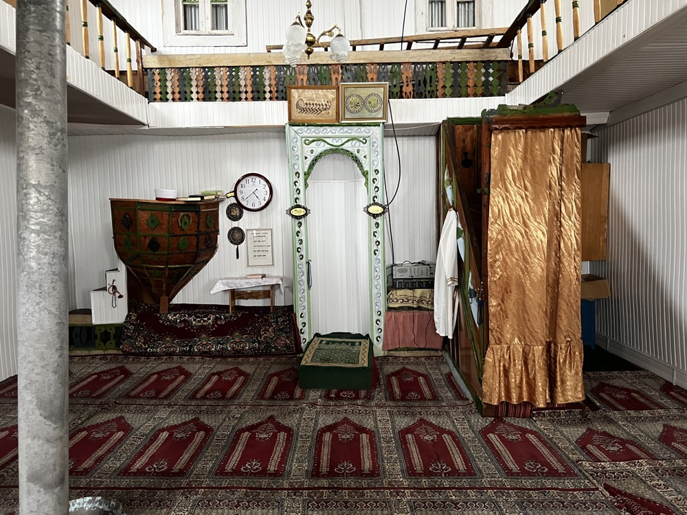

Iryna
Humenyuk
Writer, editor and designer. Data journalism, editorial and visual storytelling. Columbia Journalism × Waterloo Architecture. Based in San Francisco.
Scroll sideways
The City's $16 Billion Books
S.F. budget cuts are coming. Here's our guide to the city's $16 billion books.
San Francisco publishes a budget almost nobody can read. This guide rebuilds it as a treemap of every department at once, against a projected $607m deficit: a general hospital $94m short, a sheriff's department on track to exhaust its budget on overtime, and federal money that swung 211 per cent in a year.

Students Left Sweating
New York City classrooms without air conditioning face rising health threats.
In 2020 the city tracked air-conditioning capacity across its 1,473 public schools. Only 18 per cent of classrooms in Queens Village are air conditioned, a record low; in seven neighbourhoods it is 100 per cent. Household incomes are comparable, so the gap tracks race rather than money. Heat-related emergency visits climb sharply above 90°F.

Is AI Stealing Jobs?
A self-directed explainer testing the labour debate's most repeated claim.
Thirty occupations against a decade of Bureau of Labor Statistics data, measured on the 14 per cent national average. The professions in decline are mostly small; the largest collapse is food service, 420,000 jobs short of where growth would have put it.


Labradors West, Chihuahuas East
The most common dog breed in every San Francisco zip code, 2015 to 2025.
Licensing data is the kind of municipal record that exists to be filed and forgotten. Mapped from Animal Care & Control microchip registrations in Python and GeoPandas, it splits the city in two: Labradors across the west, Chihuahuas across the east, German Shepherds along the northern waterfront.
In 94103 alone, Chihuahuas were registered more than 750 times in a decade, the densest concentration of any breed in the city.

A Tale of Two Mosques
How one Orthodox-majority government oppresses Islam.
Reported from Batumi and Adjara for a Columbia thesis. Tamar Gelashvili, a filmmaker preserving historic mosques, is coerced into informing by the secret police. Tariel Nakaidze spends a decade seeking a permit for a second mosque, gathers 12,000 signatures, and is refused.

People We Meet
Alongside the data work at Mission Local: breaking news, community events and neighbourhood profiles. Spot reporting on a Tenderloin affordable-housing fire; scene coverage of the Sisters of Perpetual Indulgence and their annual Hunky Jesus competition; and character-driven profiles for the paper's People We Meet column.
The same instinct underlies both halves of the job. A budget line and a stranger on Mission Street are each a way of describing the same city.
The Lede Program
Columbia's data journalism certificate, completed in 2025 on a merit scholarship. Python, Pandas and GeoPandas; scraping with BeautifulSoup; visualisation in Datawrapper, RAWGraphs, D3 and ai2html.
Project work covered political trend data, employment collapse and New York climate records — the training that turned a reporter who could write into one who could also count.
Uptown Radio
Ten-plus broadcast stories pitched and produced in a single semester, in narrative news format: the exploitation of migrant workers by food delivery apps, Columbia University's privatisation of its green space, and Soviet Jewish identity in the shadow of the full-scale invasion of Ukraine.
Radio teaches compression. Ninety seconds is not a constraint on the reporting; it is the reporting.
Press Freedom
As a Russia researcher for the Committee to Protect Journalists' Europe and Central Asia programme, work on press-freedom violations inside Russia. Findings and sources remain confidential.
Earlier, in Kyiv, co-editing the English-language edition of The Ukrainians, the country's largest literary journalism magazine — editing and translating copy on Crimean oppression, German policy toward Ukraine, and the Putin–Trump relationship.
On the Built Environment
Forty-plus articles for Frame in Amsterdam on the sustainability and public-policy dimensions of architecture: why genuinely sustainable pavilions are so hard to build, and how the experience economy pushed hostels toward boutique design.
Further bylines in Azure and The Architect's Newspaper, over a Waterloo architecture degree that is mostly useful now as a way of explaining things visually.

Colophon
Selected work, most recent first. Full clip archive on LinkedIn and at the portfolio site; published pieces live with their original publishers and are linked rather than reproduced here.
Set in Helvetica. Built as a single static page, no framework, no tracking. Charts made in RAWGraphs, Datawrapper and D3; maps in GeoPandas and QGIS.